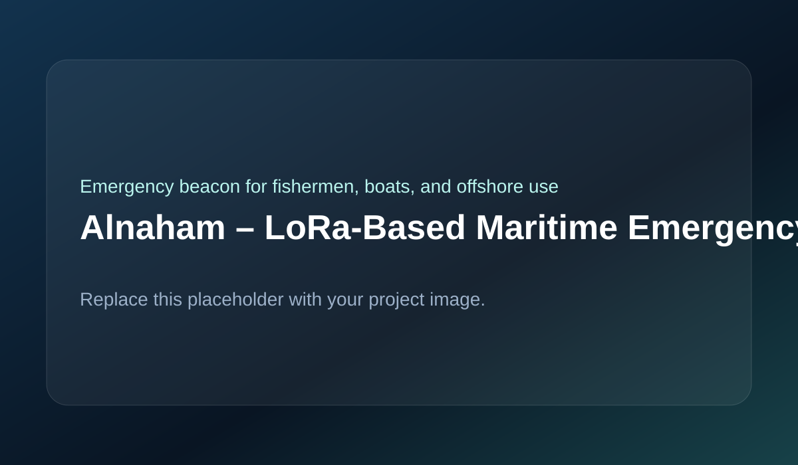

Designed a maritime safety device that transmits GPS position and emergency alerts to a ground station using LoRa, with solar charging, onboard display, and emergency buttons.

Alnaham combines a LoRa module, GPS receiver, status display, five emergency buttons, temperature and humidity sensing, battery storage, and solar charging in one standalone device. During normal operation the system transmits position data every 30 seconds. When a user presses an emergency button, it immediately sends the current GPS location together with the corresponding emergency message. A LoRa receiver at the ground station forwards the data to a Python-based monitoring application.
LoRa was selected because it supports long-range, low-power communication suitable for offshore operation. GPS was integrated to ensure all emergency messages include location data. A local display was added so the user can see coordinates and device status. Solar charging improves endurance during extended field use. The receiving side was implemented in Python to allow flexible data processing and future expansion.
The main challenges included maintaining reliable long-range communication, combining live GPS data with emergency triggers, managing battery and solar charging behavior, designing a simple but effective five-button emergency interface, and processing received maritime data into a usable monitoring application.
The final system successfully transmitted both periodic GPS updates and event-driven emergency alerts from sea to shore. It combined wireless communication, sensing, embedded control, and software processing into a practical maritime safety prototype.